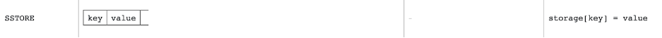
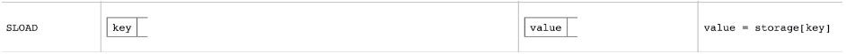

深入EVM虚拟机-part4
前言：在第 3 部分中，我们了解了合约存储的相关知识，这期我们将探讨单个合约的存储如何融入以太坊链更广泛的 “世界状态”。我们将了解以太坊链的架构，数据结构，以及 “Go Ethereum”（Geth）客户端的内部结构。
我们将从以太坊区块中包含的数据开始，并倒退到一个特定合约的存储。最后，我们追溯到 Geth 中的 SSTORE 和 SLOAD 操作码的实现。
本篇文章将介绍 Geth 代码库，了解以太坊的 “世界状态”，以此加深对 EVM 的整体理解。
以太坊架构

接下来我们对图中内容逐块分析。首先，我们把重点放在第 N 个区块头和它包含的字段上。
区块头
区块头包含了一个以太坊区块的关键信息。下面是第 N 个区块头划分出的区块数据字段。让我们来看一下 Etherscan 上的区块 14698834，看看能否看到图中的一些字段。

区块头包含以下字段
Prev Hash- 父区块的 Keccak 哈希Nonce- 区块中用于满足 POW 的随机数Timestamp- 写入当前区块的 UNIX 时间戳Uncles Hash- 叔块 Keccak 哈希Beneficiary- 收款人地址，矿工费接收者LogsBloom- Bloom 过滤器，提取自 receipt，由可索引信息（日志地址和日志主题）组成Difficulty- 当前出块的难度，设置产生单位工作量证明需要消耗多少算力Extra Data- 与该区块相关的 32 个字节的数据，由矿工自定义Block Num- 区块高度Gas Limit- 一个区块允许消耗的最大 gas 量Gas Used- 此区块内交易所消耗的总 gas 量Mix Hash- 256 位的值与 nonce 一起使用，一证明工作量证明的计算，代表区块不含 nonce 时的哈希值State Root- 执行完此区块中的所有交易后以太坊中，所有账户状态的默克尔树根 Keccak 哈希值Transaction Root- 交易生成的默克尔树的根节点哈希值Receipt Root- 交易回执生成的默克尔数的根节点哈希值
让我们看看这些字段如何与 Geth 客户端代码库中的内容相对应。block.go 中定义的 “Header” 结构体表示一个区块头。

（代码地址：https://github.com/ethereum/go-ethereum/blob/master/core/types/block.go）
可以看到，代码库中所述的值与概念图中的相匹配。而我们的目标是从区块头开始一路寻找到到单个合约的存储区。要做到这一点，我们需要关注块头的 State Root 字段，该字段以红色标示。
状态根（State Root）
状态根（State Root）作用类似于默克尔根，因为他是一个哈希值，依赖于他下面的所有数据块。如果任何数据块发生变化，根也会发生变化。
在”状态根”下面的数据结构是一个 Merkle Patric Trie，它为网络上的每个以太坊账户存储一个键值对结构，其中 key 时一个以太坊地址，value 是以太坊账户对象
实际上，key 是以太坊地址的哈希值，value 是 RLP 编码的以太坊账户，但是我们现在可以忽略这一点。
以太坊体系结构图的这一部分正是表示 “状态根” 的 Merkel Patricia Trie。

Merkle Patricia Trie 是一个比较复杂的的数据结构，我们不会在这篇文章中深入研究它。如果你对 Merkle Patricia Trie 感兴趣，推荐阅读这篇优秀的介绍性文章。
接下来，让我们看一下以太坊账户信息是如何映射到地址的。
以太坊账户
以太坊账户是一个以太坊地址的公示代表。由 4 个字段组成：
- Nonce：显示从账户发送的交易数量的计数器，这将确保交易只处理一次。在合约账户中，这个数字代表该账户创建的合约数量
- Balance：账户余额，这个地址拥有的 Wei 数量。Wei 是以太币的计数单位，每个 ETH 有 1e+18 Wei。
- Code Hash：存储在合约/账户中的字节码的哈希值。该哈希表示以太坊虚拟机（EVM）上的账户代码。合约账户具有编程的代码片段，可以执行不同的操作。如果账户收到消息调用，则执行此 EVM 代码。与其他账户片段不同，不能更改，所有代码片段都被保存在状态数据库的对应哈希下，供后续检索。此哈希值为 codeHash。对于外部所有的账户，codeHash 字段是空字符串的哈希。
- Storage Root：有时被称为存储哈希。Merkle Patricia trie 根节点的 256 位哈希已编码了账户的存储内容（256 位整数值映射），并编码位 True，作为来自 256 的Keccak 256 位哈希的映射位整数键，用于 RLP 编码的 256 位整数值。此 Trie 对此账户存储内容的哈希进行编码，默认情况下为空
如下图所示：

我们来看 Geth 的代码，找到相应的文件 state_account.go 和定义 “以太坊账户” 的结构 StateAccount。

（代码地址： https://github.com/ethereum/go-ethereum/blob/master/core/types/state_account.go )
可以看到代码库中的变量和概念图相匹配。接下来，我们来看以太坊账户中的 “存储根” 字段。
存储根（Storage Root）
存储跟很像状态根，在它下面是另一个 Merkle Patricia tried。不同的是，这次的 key 是存储插槽，value 是每个插槽中的数据，实际上，在这个过程中，value 为 RLP 编码而 key 为哈希值。
下面是以太坊体系结构图的这一部分正是代表了存储根的 MRT。

存储根是一个 merkle 根哈希值，如果任何底层数据（合约存储）发生变化，它将受到影响。合约存储的任何变化会影响到存储根，进而影响到状态根，再进而影响到区块头。
文章的后半部分是对 Geth 代码库的探讨。我们将简要地了解一下合约存储的初始化，以及当调用 SSTORE & SLOAD 操作码时会发生什么。这将有助于我们在 solidity 代码和底层存储操作码 opcode 建立联系。
StateDB -> stateObject -> StateAccount
接下来以一个全新的合约为例，一个全新的合约意味着会有一个全新的 StateAccount。
在开始之前，有 3 个结构我们需要了解一下。
stateAccount：StateAccount 是以太坊账户的 Ethereum 公式表示stateObject：stateObject 在交易执行中正在被修改的以太坊账户状态StateDB：StateDB 结构式用于存储 Merkle trie 内的所有数据，用于检索合约和以太坊账户的一般查询接口。
我们通过代码来看看这三个结构的内在关系：

StateDB 结构：可以看到它有一个 stateObjects 字段，是地址到 stateObject 的映射集（状态根的 Merkle Patricia trie 是以太坊地址到以太坊账户的映射，而 stateObject 是正在被修改的以太坊账户）。
stateObject 结构：可以看到它有一个数据字段，属于 StateAccount 类型，是一个代码实现里的中间态（记得在文章的早些时候，我们将以太坊账户映射到Geth 中的 StateAccount）。
StateAccount 结构：这个结构代表一个以太坊账户，它的 Root 字段是我们之前讨论到的存储根。
在这个过程中，一些知识拼图的碎片开始拼凑起来。有了这些前置知识，我们就可以来了解一下一个新的以太坊账户或者说是 StateAccount 是如何初始化的。
初始化一个新的以太坊账户 (StateAccount)
我们需要通过 statedb.go 文件和它的 StateDB 结构创建一个新的 StateAccount。StateDB 有一个 createObject 函数，可以创建一个新的 stateObject，并将一个空白的 StateAccount 传给它。这实际上是创建一个空白的以太坊账户。
下图为代码详情：

StateDB 有一个 createObject 函数，它接收一个传入的以太坊地址并返回一个stateObject（stateObject 代表一个正在被修改的以太坊账户。）
这个 createObject 函数调用 newObject 函数，传入 stateDB、地址和一个空的 StateAccount（StateAccount = 以太坊账户），返回一个 stateObject。
在 newObject 函数的返回语句中，我们可以看到有许多与 stateObject 相关的字段如：地址、数据、dirtyStorage 等。
stateObject 的 data 字段映射到函数中的空 StateAccount 输入，注意在第 103-111 行是一个 nil 值转变为初始化空值的过程。
stateObject 被成功创建并带着已经初始化完成的 StateAccount（也就是 data 字段）返回。
现在有一个空的 stateAccount 了，接下来要想存储一些数据，为此我们需要使用 SSTORE 操作码。
SSTORE
SSTORE：将一个 (u)int256 写到内存中。

它从栈中弹出两个值，首先是 32 字节的 key，然后是 32 字节的 value，并将该值存储在由 key 定义的指定存储槽中。
下面是 SSTORE 操作码的 Geth 代码流程，让我们看看它的作用：

我们从定义了所有 EVM 操作码的 instruments.go 文件开始。在这个文件中，我们能找到名为 opSstore 的函数。
传入这个函数的参数包含合约上下文，列如栈、内存等。从栈中弹出 2 个值，并定义赋值记作 loc（location 的缩写）和 val（value 的缩写）。
然后，将这 2 个值和合约地址作为输入一起传入到 StateDB 的 SetState 函数。SetState 函数使用合约地址来检查出入的该合约是否存在一个 stateObject，如果不存在，它将为其先创建一个。然后，对调用创建后的 stateObject 的 SetState，传入 StateDB db、key 和 value。
stateObject 的 SetState 函数会对假存储做一些检查，以及值是否有变化，然后运行 journal 的 append 函数。
如果你阅读了关于 journal struct 的代码注释，能看到 journal 是用来跟踪状态修改（保存中间变量）的，以便在出现执行异常或请求撤销的情况下可以恢复这些修改。
在 journal 被更新后，调用 storageObject 的 setState 函数，传入 key 和 value。更新 storageObjects.dirtyStorage。
现在们已经更新了 stateObject 的 dirtyStorage。这意味这什么呢？
让我们从定义 dirtyStorage 的代码开始。

(dirtyStorage → Storage → Hash → 32-byte)
dirtyStorage 在 stateObject 结构里定义的，被描述为 “在当前事务执行中被修改的存储项”。
与 dirtyStorage 相对应的存储类型是 common.Hash 到common.Hash 的映射。
Hash type 只是一个长度为 HashLength 的字节数组。
HashLength 是一个常数，值为 32。
一个 32 字节的 key 映射到一个 32 字节的 value，这正是我们在上一篇文章中上讲到的合约存储的概念。可能已经注意到 stateObject 中的 pendingStorage 和 originStorage 就在 dirtyStorage 字段的上方。它们都是有相关的，在最终确定写入 dirtyStorage 过程中，dirtyStorage 会被复制到 pendingStorage，而 pendingStorage 又在 trie 被更新时被复制到 originStorage。在 trie 被更新后，StateAccount 的存储根也将在 StateDB 的 “Commit” 过程中被更新。这将把新的状态写入底层的内存 trie 数据库中。
现在来到最后一部分，SLOAD。
SLOAD
SLOAD：从存储中读取 (u)int256。

从栈中弹出 1 个值，即 32 字节的 key，代表存储槽，并返回存储在那里的 32 字节的 value。
下面是 SLOAD 操作码的 Geth 代码流程，让我们看一下它的作用：

我们再次从 instructions.go 文件开始，可以找到 opSload 函数。我们从栈的顶部获取 SLOAD 的位置（存储槽），也就是临时变量 loc。
调用 StateDB 的 GetState 函数，输入合约地址和存储位置。GetState 获得与该合约地址相关的 stateObject。如果 stateObject 不为空，它就会在该 stateObject 上调用 GetState。
在 stateObject 的 GetState 函数会对 fakeStorage 进行检查，然后再对 dirtyStorage 进行检查。
如果 dirtyStorage 存在，返回 dirtyStorage 映射中关键位置的值（dirtyStorage 代表合约的最新状态，这就是为什么要首先返回它）。
否则就将调用 GetCommitedState 函数，在 storage tire 中查找该值，并再次检查 fakeStorage。
如果 pendingStorage 存在，则返回 pendingStorage 映射中 key 位置的值。
如果上述方法都没有返回，就检索 originStorage 并返回值。
你会发现函数最先返回 dirtyStorage，然后是 pendingStorage，最后是 originStorage。这是非常合理的，因为在执行过程中，dirtyStorage 是最新的存储映射，其次是 pending，最后才是 originStorage。一笔交易可以多次操作改变同一个插槽的数据，所以我们必须确保我们获取的是最新的值。
让我们想象一下在同一笔交易中，在 SLOAD 之前在同一个插槽发生了 SSTORE 操作。那么在这种情况下 dirtyStorage 将在 SSTORE 中被更新，在 SLOAD 中被返回。
我们现在对 SSTORE 和 SLOAD 在 Geth 层面的实现有一定的了解。它们如何与状态和存储对象进行交互，以及更新插槽与更广泛的以太坊 “世界状态” 的关系。